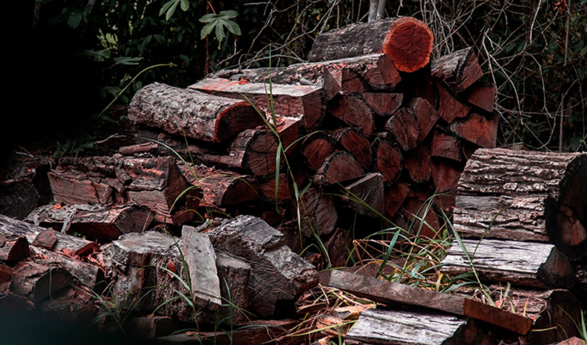
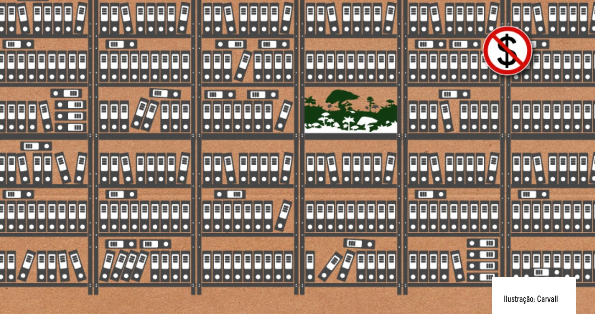
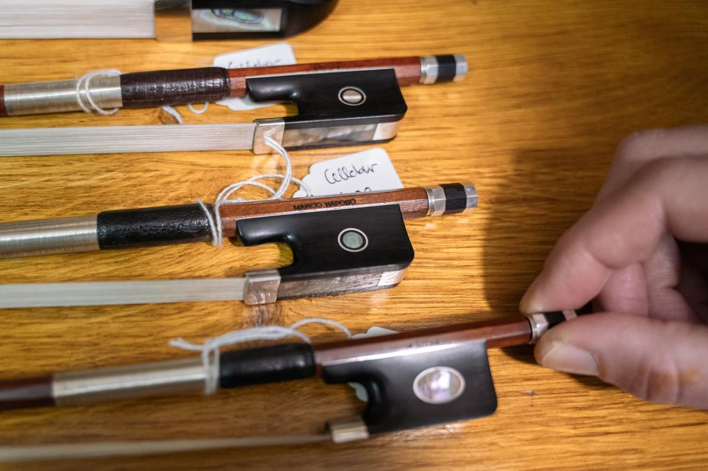
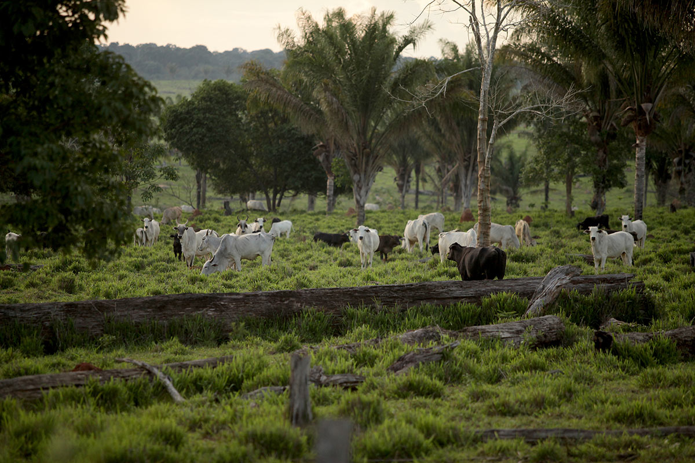
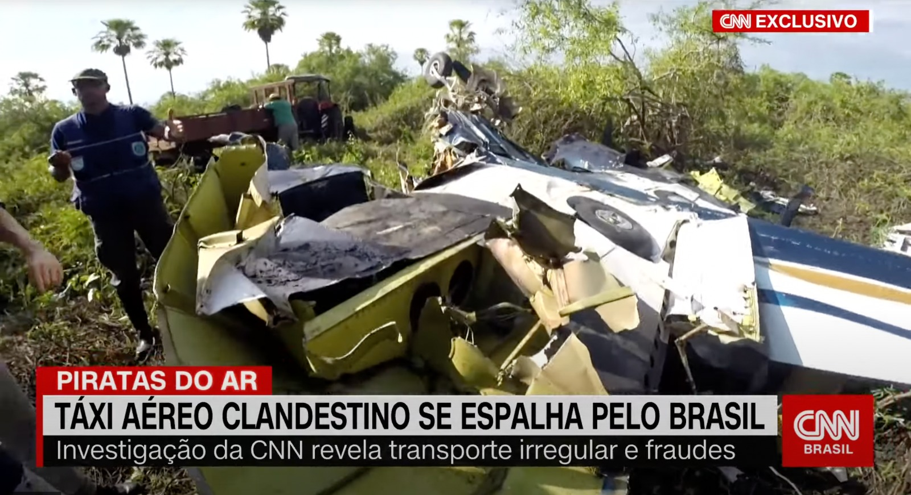
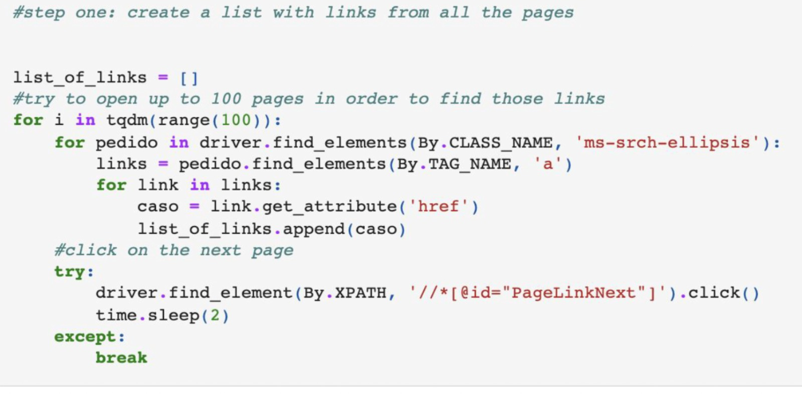
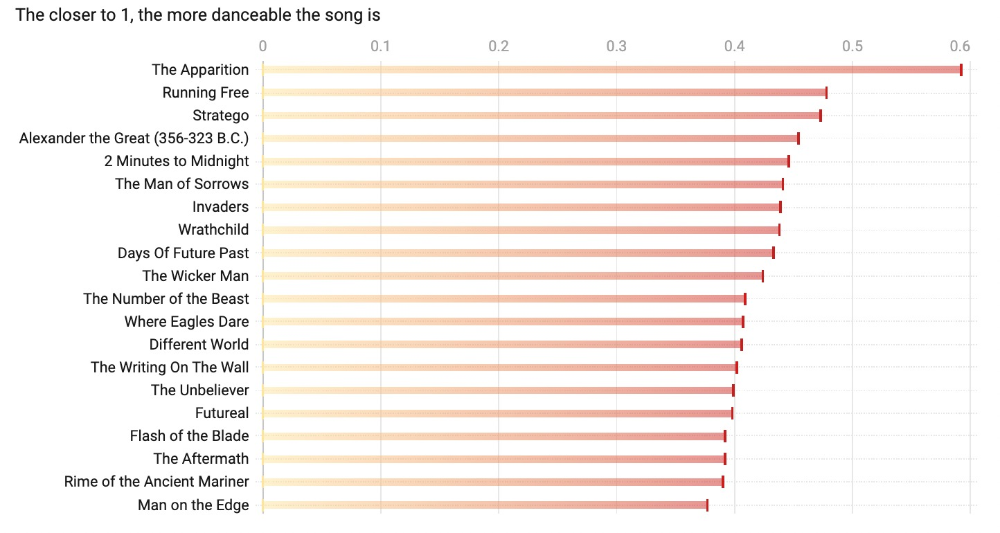

A Brazilian data and investigative journalist with a
proven record of producing and managing impactful projects in my country with several organizations and funders in Brazil, US and Europe.
Training: University of Oxford
I was selected to attend a fellowship at the Reuters Institute for the Study of Journalism and published a guide that has become a journalism course for 1,000+ journalists.
I have worked for a decade in major publications in Brazil and abroad,
such as Estadão, TV Globo,
CNN Brasil, Revista Piauí and
OCCRP.
For that work I have been receiving several awards and scholarships and some of my investigative projects have been used as an example of good journalism practices in articles
like this one, published by the Global Investigative Journalism Network (GIJN).
I have also been coordinating and/or contributing to multiple projects that
improve government transparency in my home
country.
I co-founded Fiquem Sabendo, a Brazilian NGO t
a non-profit that has helped
to save over US$ 1 million in public funds,
published hundreds of documents used in over 5,000 stories by major media outlets
and persuaded governments to release previously sealed databases. We have been supported by several
funders like Google News Initiative, Muckrock Foundation, Heinrich Böll Stiftung, Instituto Serrapilheira and others.
Learn more about it in the video below.
In 2022, as a grantee of the Brown Institute for Media Innovation (Columbia/Stanford University),
I created DataFixers.org, an investigative journalism project focused on collecting and organizing public data and records to uncover environmental crimes.
It has been used by BBC, Al Jazeera, The Washington Post, OCCRP, ICIJ and others.
Since 2020, I am also one of the
Brazilian Association for Investigative Journalism (Abraji) directors, one of the world's leading associations of investigative reporters, and
develop different projects there to help
journalists get and use public data.
One of these projects was awarded a six-month fellowship
to study at the University of Oxford and my project became an online
training on public records that helped hundreds of local reporters and editors.
Investigative reporting
Revista PiauíOCCRP
A world heritage site under attack in Brazil

Brazilwood is being driven to extinction by an industry not often associated with organized crime: classical music.
Tests on a sample of the confiscated wood show it was logged in a protected forest.
How Brazil's environmental agency lost R$ 1 billion (Revista Piauí)

An investigation about how environmental fines "disappeared" from Brazil's environmental agency office, Ibama,
helping several environmental offenders save money and continue deforestation in the Amazon.
Brazilian Bow Makers Investigated For Dealing in Endangered Wood (OCCRP/Piauí Magazine)

A 2-month cross-border investigation in the US, UK, and Brazil about a group of bowmakers suspicious of trafficking an endangered Brazilian wood to make violin and cello bows. I have coordinated this project.
Brazil might lose R$ 300 million in environmental fines by 2022 (BBC)
Internal documents show that Brazil is not only not punishing deforestation but, according to the interviewees, companies feel that fines are not a deterrent to criminal behavior as they often expire without enforcement.
How Endangered Brazilian Timber Ends Up in the Bronx (OCCRP, Revista Piauí)
A long journalistic investigation reveals how gang members in Brazil have managed to illegally extract and export yellow ipe wood to the USA in a highly profitable fraud scheme.
This investigation has begun with a spreadsheet and multiple cross-referencing with public datasets.
Exposing secret offshores in Luxembourg (OCCRP, Revista Piauí)
Coordinated by OCCRP, Le Monde, and 15 other media partners around the world, this project has revealed how secret companies have been used for crime and corruption.
The data was obtained by scraping Luxembourg's business register website.
I was responsible for the data analysis and writing stories related to Brazilian figures.
How China Tobacco's worldwide expansion is keeping Brazilian tobacco growers in debt (OCCRP, The Intercept)
A cross-border investigation on the world's largest tobacco company and how it is flooding countries with cigarettes and working with smuggling networks.
We found, in Brazil, that farmers are committing suicide and living in debt.
How Illegal Land Grabs in Brazil’s Amazon Feed the Global Beef Industry (OCCRP, Revista Piauí)

Land grabs and deforestation have devastated Brazil’s northern Pará state. But slaughterhouses, including some owned by top meat processors JBS and Marfrig, still buy from suppliers who source from ranches on stolen land. This story was made in partnership with Fiquem Sabendo, the non-profit data agency that I co-founded.
How a small company led a massive disinformation campaign in Brazil (Estadão)
I have used social media data to identify and group the most influential Facebook pages responsible for sharing disinformation content during Brazil's national elections in 2018. I found that they were being operated by a single small company operated by a couple. Facebook decided to shut their pages down a week after the story, based on my investigation.
This story made a city save millions in public funds (Estadão)
...by revealing that a public bid was already set between companies before the due date.
The government decided to cancel the biddue to my investigation and start a new one with more competitors.
Exposing a millionaire housing-benefit fraud (Estadão)
...by revealing that public universities' top officials had been lying about where they actually lived. After that, a court said they should give the money back, based on the story.
Authorities helped healthcare tycoons to import ineffective medicine during the pandemic (CNN Brasil)
Secret documents revealed how Bolsonaro's government spent public funds to import and produce chloroquine in Brazil using an Army lab during the Covid-19 crisis.
Authorities and artists use illegal and dangerous air charter services (CNN Brasil)

Politicians and celebrities have used illegal air charter services for years. This story led to multiple fines and investigations to some of these companies, and one of them was shut down after it was published.
How income impacts Brazil's National High School Exam results (Estadão Dados)
This story identified the factors that most affected students' grades in Enem,
Brazil's largest high school exam. We found students with the worst social
conditions who achieved grades similar to those of the richest students.
Programming: Scraping every Brazil's Freedom of Informaction Act (FOIA) requests (Columbia Journalism School)

I have created two scrapers that monitor FOIA requests (Freedom of Information Act or Lei
de Acesso à Informação in Portuguese) sent by Brazilian citizens in a spreadsheet based on a specific
keyword. It helps to monitor how transparent the federal government is and can also work as a huge source of data and documents.
Data analysis with API: Iron Maiden songs have gotten sadder over the years (Columbia Journalism School)

A Spotify data analysis using Python for a data journalism class. The "happiest" Iron Maiden songs were released in the 80's and 90's. I have analyzed Iron
Maiden's discography
using data from the Spotify API and explored the data to show how happy and danceable each song is,
based on a "valence" index that uses the sound (not the lyrics) to measure how positive that song is.
Data analysis from the Brazilian Ministry of Health
shows an increase in child obesity between 2019 and 2021. This story was made
in partnership
with Fiquem Sabendo, the non-profit data agency that I cofounded.
Temporary professor at the Master in Data Journalism (Insper) - Introduction to Spreadsheets and Data (3 months)
8-hour program about public records for the Brazilian alternative media (Barão de Itararé)
2021
LAI nas Redações: a public records program taught in 10 Brazilian newsrooms (including Globo, Estadão, Folha with almost 2,000 subscriptions) - Partnership between Abraji and Fiquem Sabendo
3-hour workshop about how to get public records and data for lawyers, activists, and journalists. Instituto Ling
Due to my professional efforts to
improve public transparency in Brazil, I've been interviewed by several TV, podcasts, radio and online news shows - you can see some of those below.
Globo/G1 - interview (January 2023) - I was interviewed by TV Globo host Natuza Nery in one of Brazil's most popular podcasts, O Assunto, to explain how I obtained former presidents corporate expenses, including Bolsonaro, and how to read the data. Held in Portuguese. Listen to the podcast here
UOL (January 2023) - I was interviewed by UOL TV host Fabiola Cidral to discuss how to read government expenses in the Brazilian transparency portal. Held in Portuguese.
Fil-Lisbon (conference in Portugal - November 2022) - I was invited by the Filecoin Foundation and Muckrock to present my data journalism project, DataFixers.org, in a conference in Portugal. (Held in English)
CNN (Brasil) - interview (July 2020) - I was interviewed by CNN TV host Monalise Perrone to explain how I did an investigative project about illegal air charter services in Sao Paulo. Held in Portuguese.
TV Cultura - interview (Dec.22) - I was interviewed by Jornal da Cultura, a traditional TV show in Brazil, to explain how Brazil can improve transparency policies in 2023. Held in Portuguese.
UOL/Análise da Notícia - interview (Dec.22) - I was interviewed by Brazil's most popular news website to explain how we did the Brazilwood smuggling investigation. Held in Portuguese.
TV Câmara - interview (Nov.22) - I was interviewed by Sao Paulo's City Council to discuss transparency and freedom of information. Held in Portuguese.
TV Gazeta - interview (Dec.22) - I was interviewed by TV Gazeta to explain how to overcome government secrecy in Brazil. Held in Portuguese.


{kind=link}